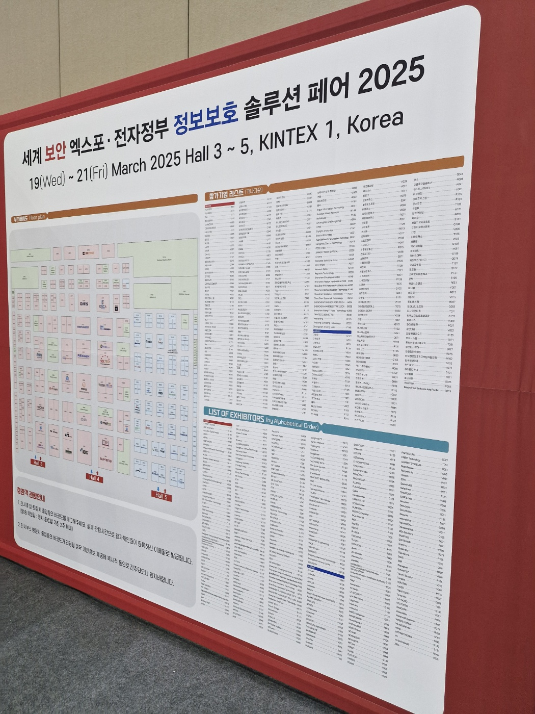
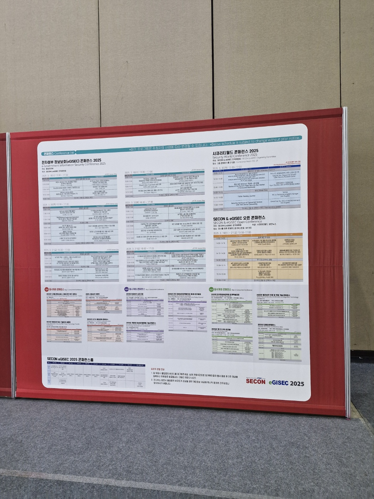
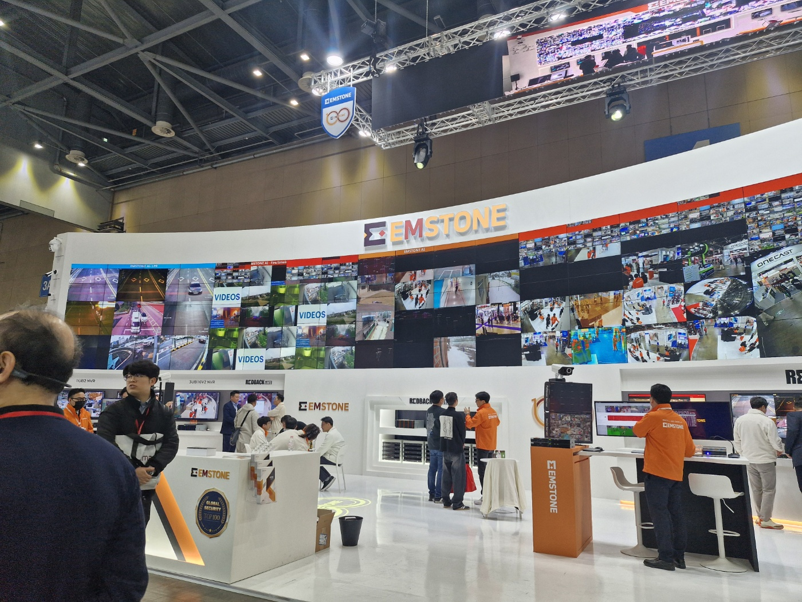
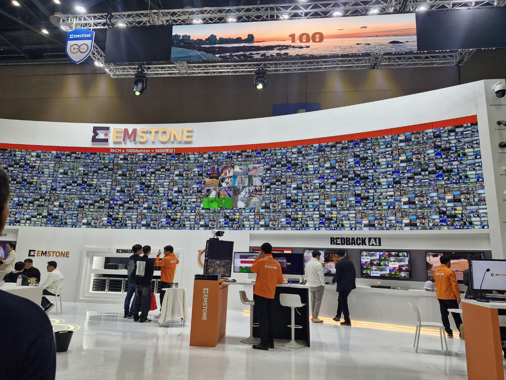

세계 보안 엑스포 2025


SECON은 세계 보안 엑스포로, 매년 서울에서 열리는 국제 보안
전시회입니다. 저는 이번 2025 세계 보안 엑스포가 열린 킨텍스에
참가하여 많은 부스들을 둘러보고, 다양한 보안 기술과 솔루션을 체험할
수 있었습니다.
그리고 SECON은 보안 분야의 최신 동향을 파악하고, 다양한 기업의
제품과 솔루션을 비교할 수 있는 좋은 기회입니다. 또한, 보안
전문가들과의 네트워킹을 통해 새로운 비즈니스 기회를 창출할 수
있습니다.
행사에서는 다양한 세션과 워크숍이 진행되며, 최신 보안 트렌드와
기술에 대한 발표가 이루어집니다. 또한, 참가자들은 다양한 기업의
부스를 방문하여 최신 제품과 솔루션을 직접 체험할 수 있습니다.
SECON은 보안 분야의 전문가와 기업들이 모여 최신 기술과 정보를
공유하는 중요한 행사로, 보안 산업의 발전에 기여하고 있습니다. 특히,
이번 2025년 행사는 보안 기술의 발전과 함께, 사이버 보안의 중요성이
더욱 강조되는 시점에서 개최되어 많은 관심을 받고 있습니다.
관심 가지고 봤던 세션


SECON에서 가장 관심을 가지고 봤던 세션은 EMSTONE이라는 기업의
기술이였습니다. EMSTONE은 보안 분야에서 혁신적인 기술을 개발하고
있는 기업으로, 특히, 사이버 보안과 관련된 다양한 솔루션을 제공하고
있습니다.
EMSTONE의 세션에서는 최신 사이버 보안 기술과 솔루션에 대한 발표가
이루어졌습니다. 특히, EMSTONE의 사이버 보안 솔루션은 인공지능(AI)과
머신러닝(ML)을 활용하여 실시간으로 사이버 공격을 탐지하고 대응하는
기술이었습니다.
이 기술은 기존의 사이버 보안 솔루션보다 더 빠르고 정확하게 사이버
공격을 탐지할 수 있으며, 기업의 보안 수준을 크게 향상시킬 수
있습니다. 또한, EMSTONE은 다양한 산업 분야에 적용할 수 있는 솔루션을
제공하여, 기업들이 사이버 보안에 대한 걱정을 덜 수 있도록 돕고
있습니다.
EMSTONE의 세션은 최신 사이버 보안 기술에 대한 깊이 있는 이해를
제공하였으며, 많은 참가자들이 관심을 가지고 참여하였습니다. 특히,
EMSTONE의 기술은 보안 분야에서 큰 주목을 받고 있으며, 앞으로도 많은
기업들이 이 기술을 도입할 것으로 예상됩니다.
SECON에서 EMSTONE의 세션을 통해 최신 사이버 보안 기술에 대한 깊이
있는 이해를 얻을 수 있었으며, 앞으로도 EMSTONE의 기술에 대한 관심을
가지고 지켜볼 예정입니다.
마지막 후기
세계 보안 엑스포 SECON에 참가하는 것은 이번년도가 처음이였지만,
다양한 기업의 부스를 둘러보고, 최신 보안 기술과 솔루션을 체험할 수
있는 좋은 기회였습니다.
특히, EMSTONE의기술은 현장에서 직접 체험해보니 더욱 흥미로웠습니다.
내년에도 SECON에 참가할 의향이 있으며며, 앞으로도 보안 분야의 최신
기술과 동향에 대한 관심을 가지고 지켜볼 예정입니다.